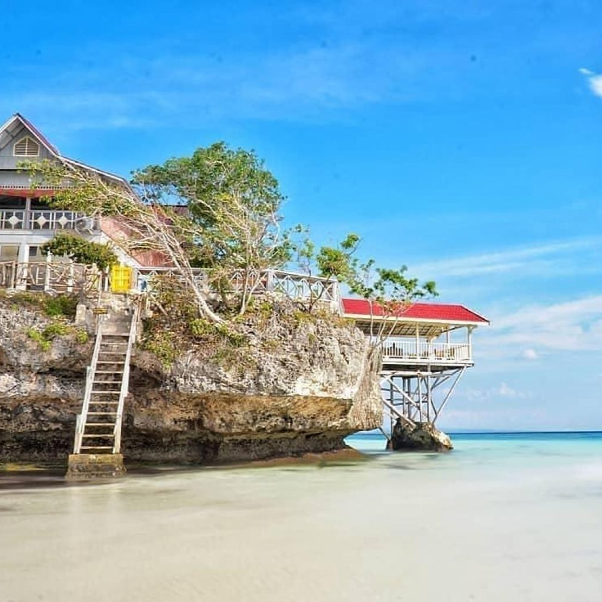
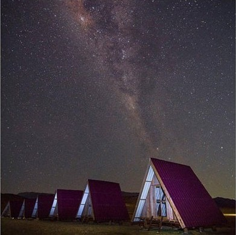
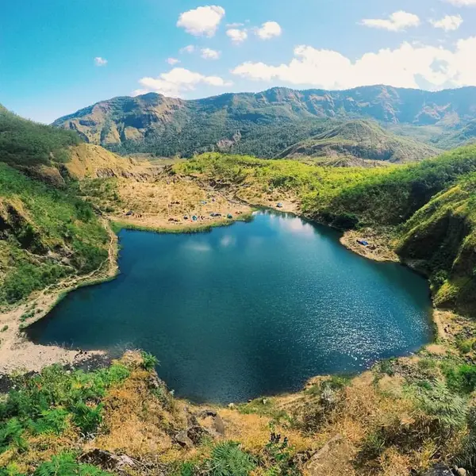

Tempat Populer

Pantai Bira
Pantai Bira terletak di Kabupaten Bulukumba, Sulawesi Selatan, Indonesia. Lebih tepatnya, pantai ini berada di Desa Bira, Kecamatan Bonto Bahari, Kabupaten Bulukumba.

Lappa Laona
Lappa Laona terletak di Dusun Waruwue, Desa Harapan, Kecamatan Tanete Riaja, Kabupaten Barru, Sulawesi Selatan.

Tanralili
Danau Tanralili di kaki Gunung Bawakaraeng, Desa Manimbahoi, Kecamatan Parigi, Kabupaten Gowa, Sulawesi Selatan menyuguhkan panorama eksotis.